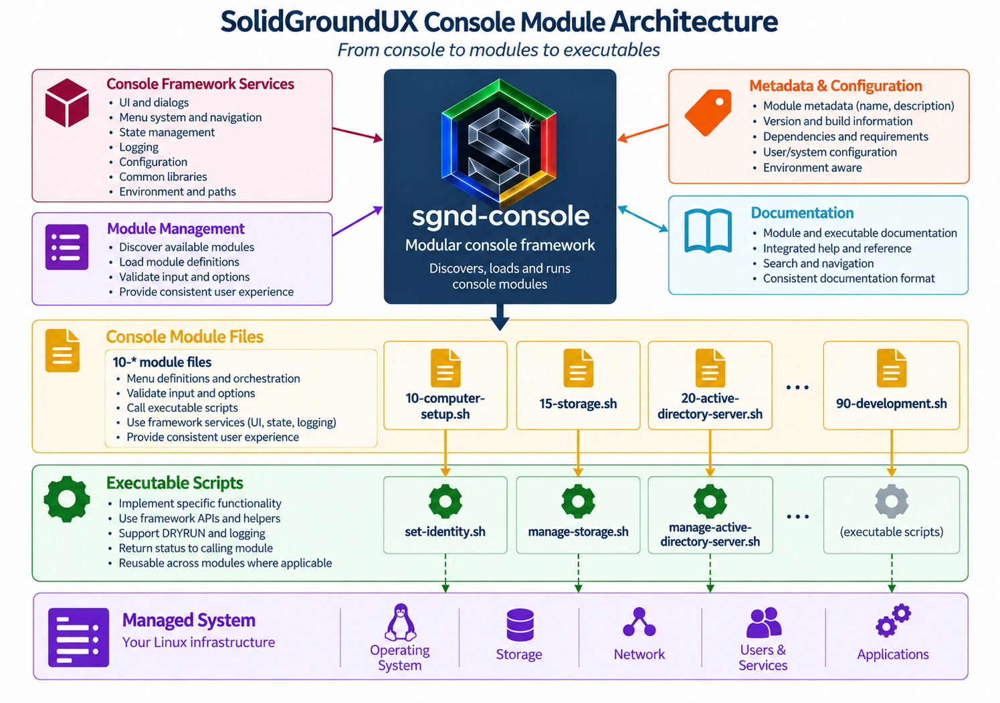

SolidGroundUX Management Console Modules (MCM) is the administration product built on the SolidGroundUX Framework. As of version 2.1 the management console is no longer treated as part of the Framework runtime: MCM owns the console host, the public `sgnd-console` command, module discovery and lazy loading, and the functional server-management modules.
The Framework remains the shared dependency beneath MCM. It provides bootstrap, configuration/state, logging, UI primitives, `sgnd-menu`, metadata helpers, and other reusable APIs. MCM supplies the management application built from those services.
The modules cover practical administration subjects such as computer setup, storage, Active Directory, Samba, web serving, SQL Server, Docker, Framework management, and development utilities. Their purpose is to make recurring server-management work guided, consistent, repeatable, and inspectable.

`management-console.sh` is the MCM-owned host behind `sgnd-console`. At startup it discovers enabled module files and reads their literal page metadata without sourcing their implementation. That metadata is enough to build the main index.
A module is sourced only when its page is opened for the first time. It then registers its groups and items through the Framework-owned `sgnd-menu` API and remains loaded for the lifetime of the console process. Returning to the index does not unload it.
Modules are source-only orchestration units. They own subject-specific menu content, helpers, validation entry points, and calls into standalone operational executables. Shared functionality belongs in the appropriate Framework or MCM library according to ownership; modules do not depend on another module having been opened first.
Framework smoke/installation testing is owned by `sgnd-smoketest`. The MCM Framework Test page orchestrates those Framework suites together with MCM console-registration and module-validation checks; it does not turn those MCM checks into Framework suites.
| Module | Executable | Common |
|---|---|---|
| 10-computer-setup.sh | set-identity.sh | |
| 15-storage.sh | manage-storage.sh | |
| 20-active-directory-server.sh | manage-active-directory-server.sh | active-directory-management.sh |
| 25-active-directory-client.sh | manage-active-directory-client.sh | active-directory-management.sh |
| 27-active-directory-management.sh | manage-active-directory.sh | active-directory-management.sh |
| 30-samba-file-server.sh | manage-samba-file-server.sh | |
| 30-samba-file-server.sh | manage-samba-shares.sh | |
| 40-solidgroundux.sh | manage-solidgroundux.sh | |
| 45-solidground-framework-test.sh | sgnd-smoketest | |
| 50-web-server.sh | manage-web-server.sh | |
| 50-web-server.sh | publish-web-content.sh | |
| 60-sqlserver.sh | manage-sqlserver.sh | |
| 70-docker-server.sh | manage-docker-server.sh | |
| 70-docker-server.sh | manage-docker-containers.sh | |
| 90-development.sh |